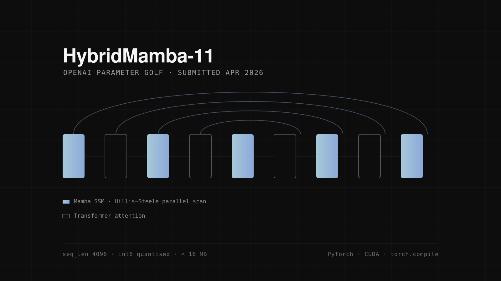

HybridMamba-11
Parameter Golf is a simple, brutal constraint: build the most capable language model you can under a hard size budget. Every architectural choice becomes a trade you have to justify in bytes.
HybridMamba-11 alternates Mamba state-space blocks with Transformer attention blocks across eleven layers, wired together with U-Net-style skip connections between the early and late layers. The reasoning: state-space layers give you long context almost for free, attention gives you the precise token-to-token recall that pure SSMs are weak at, and the skips let the deep layers reuse early representations instead of re-learning them. It was the first State Space Model-based submission in the competition.
The hardest problem was the compiler. Mamba's reference CUDA kernels were not traceable in torch.compile's fullgraph mode. Without it, only about 300 training steps fit in the 600 s budget, against roughly 20,000 for the leading entries: enough to make the whole approach uncompetitive. The choice looked like giving up compilation or giving up Mamba.
I did neither. I reimplemented the selective scan as a Hillis–Steele parallel associative scan in pure PyTorch, replacing the sequential O(L) recurrence with O(log L) depth and making the whole graph compilable. More FLOPs on paper, far fewer in wall-clock: the optimised path measured a 48× speedup.
Getting from there to a submission meant clearing four integration problems: compile compatibility, a CUDA dtype mismatch, state-dict compatibility, and 12.5M dead parameters that were costing budget while contributing nothing. The result: 31.8M parameters, 13.6 MB compressed, comfortably under the 16 MB cap.
Submitted 4 April 2026 as PR #1365, a preliminary, non-record entry. It is still open, waiting on H100 time to validate the fullgraph path. It also ended my RunPod credits, which is its own kind of result.
- Stack
- PyTorch, CUDA, torch.compile, Triton, BF16, int6, DDP
- Result
- 31.8M params · 13.6 MB · 48× speedup
- Year
- 2026
- Code
- parameter-golf
